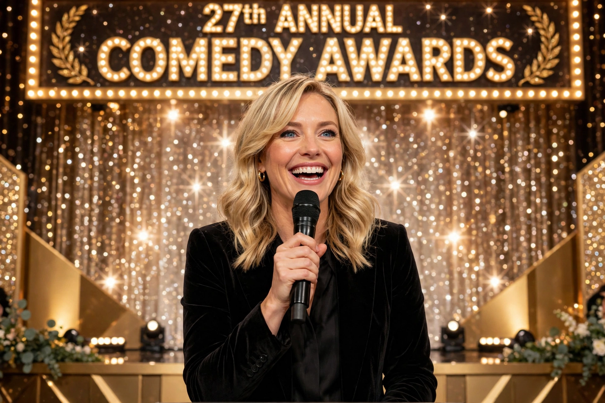

| Amy Poehler | |
|---|---|
 | |
| Born | Amy Meredith Poehler September 16, 1971 Newton, Massachusetts, U.S. |
| Alma mater | Boston College |
| Occupations | Actress, comedian, writer, producer, director |
| Years active | 1992–present |
| Spouse | Will Arnett (m. 2003; div. 2016) |
| Known for | Saturday Night Live, Parks and Recreation |
Amy Meredith Poehler (born September 16, 1971) is an American actress, comedian, writer, producer, and director. Poehler was a cast member on the NBC sketch comedy series Saturday Night Live from 2001 to 2008, where she was nominated for a Primetime Emmy Award for Outstanding Supporting Actress in a Comedy Series. From 2009 to 2015, she produced and starred as Leslie Knope in the NBC sitcom Parks and Recreation, for which she won a Golden Globe Award for Best Actress in a Television Musical or Comedy Series in 2014.
Poehler was born in Newton, Massachusetts, and raised in Burlington. She graduated from Boston College in 1993 and moved to Chicago, where she studied with Del Close at ImprovOlympic and co-founded the Upright Citizens Brigade (UCB) comedy troupe with Matt Besser, Ian Roberts, and Matt Walsh. UCB moved to New York in 1996, had a Comedy Central series, and founded influential improv theatres in New York and Los Angeles.
Poehler joined SNL in 2001 and in 2004 became co-anchor of "Weekend Update" with Tina Fey, the show's first all-female anchor team. Her impression of Hillary Clinton during the 2008 election season was widely praised. She left as a regular in 2008 but returned to host and guest frequently.
As Leslie Knope — an earnest, hyper-competent parks official in fictional Pawnee, Indiana — Poehler anchored one of the most beloved sitcoms of its era and served as a producer and occasional writer and director. She co-hosted the Golden Globe Awards with Fey three times to acclaim. Her voice roles include Joy in Pixar's Inside Out (2015) and its 2024 sequel. She directed the films Wine Country (2019), Moxie (2021), and the documentary Lucy and Desi (2022). Her 2014 memoir Yes Please was a bestseller, and she founded the digital community Amy Poehler's Smart Girls.